"For the Republic!"
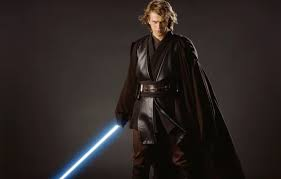
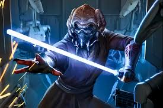
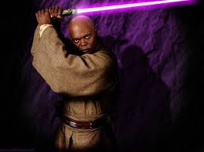
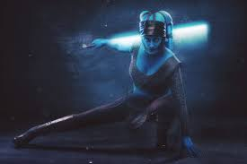
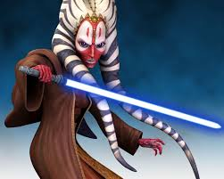
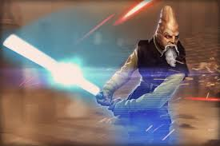
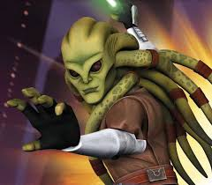
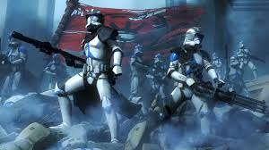
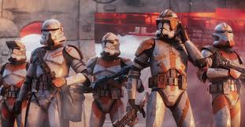
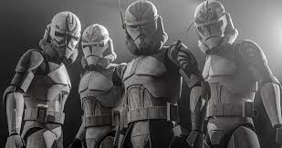
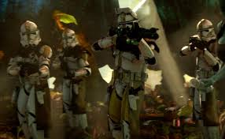
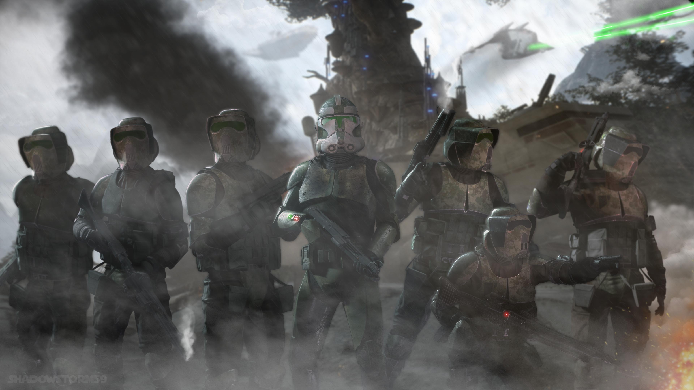
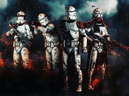
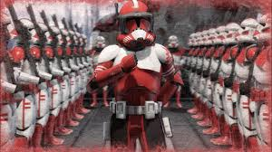
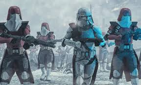
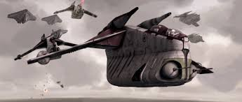
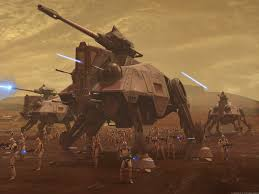
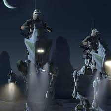
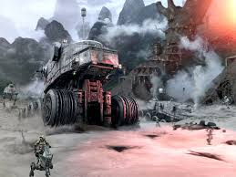
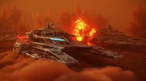
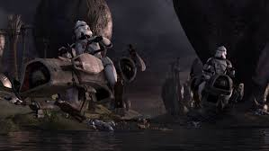
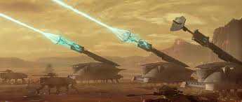
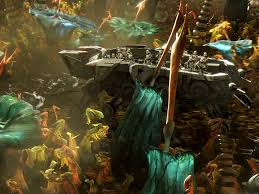
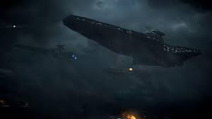
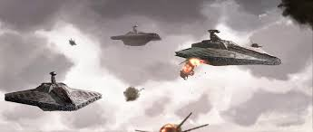
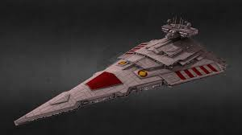
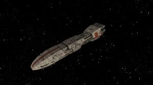
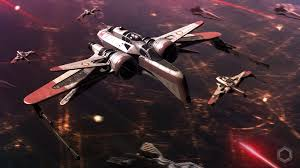
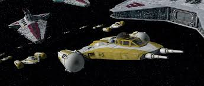
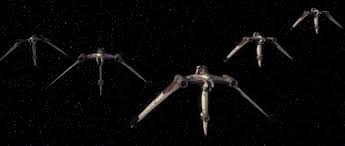
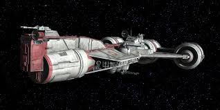
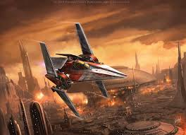
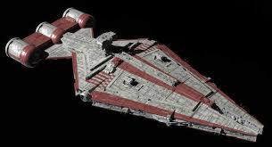
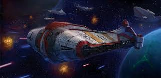
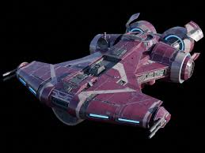
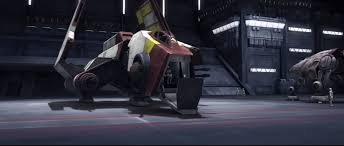
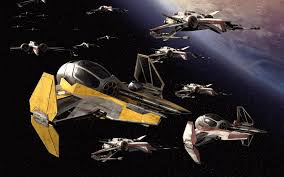
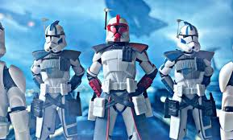
Elite independent operatives like Fives and Echo. Removed inhibitor chips early and uncovered the conspiracy.
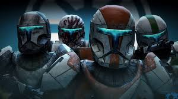
Boss, Fixer, Scorch, Sev — 4-man sabotage and infiltration team. Masters of stealth operations.
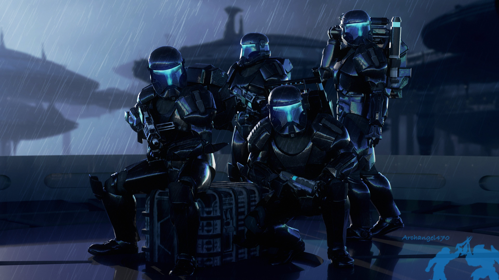
Niner, Darman, Fi, Atin — 4-man infiltration and sabotage team. Darman and Fi later defected.
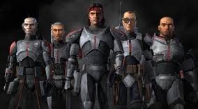
Hunter, Tech, Wrecker, Crosshair, Echo. Genetic mutants. Removed chips and fought for the Rebellion.